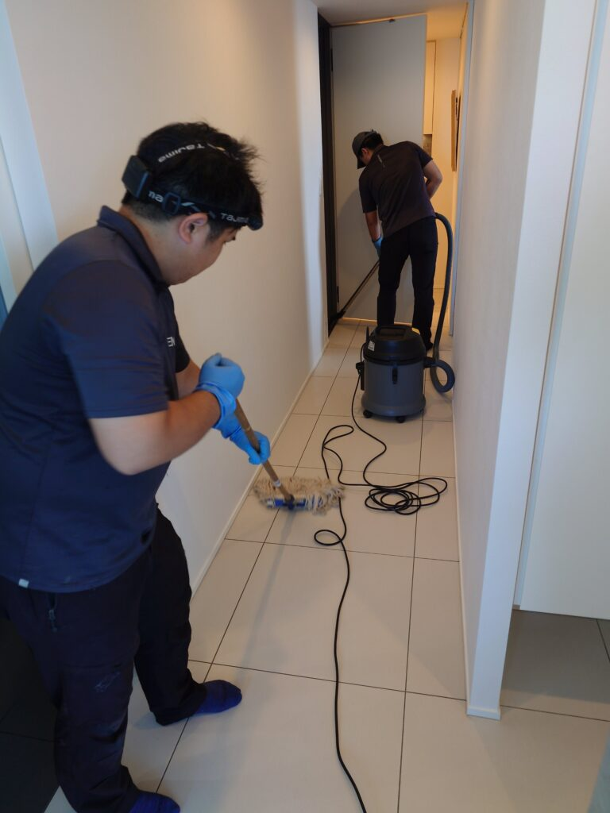
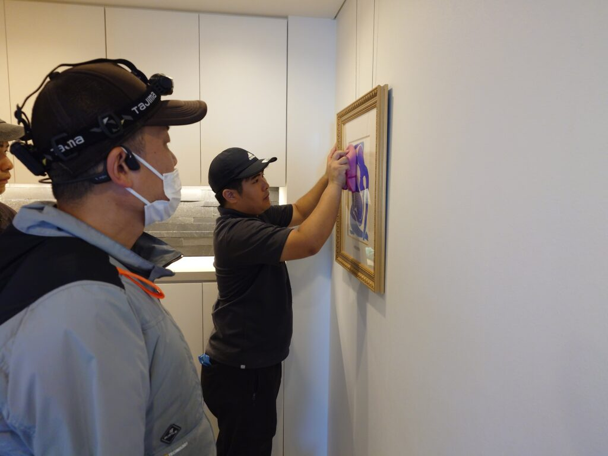
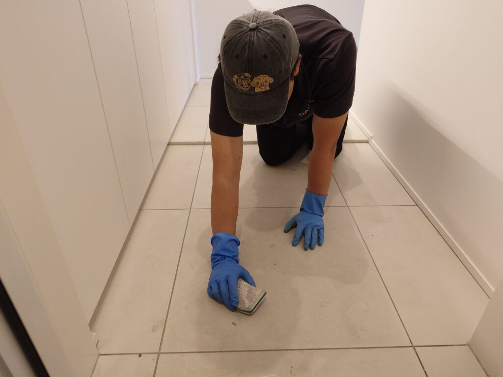
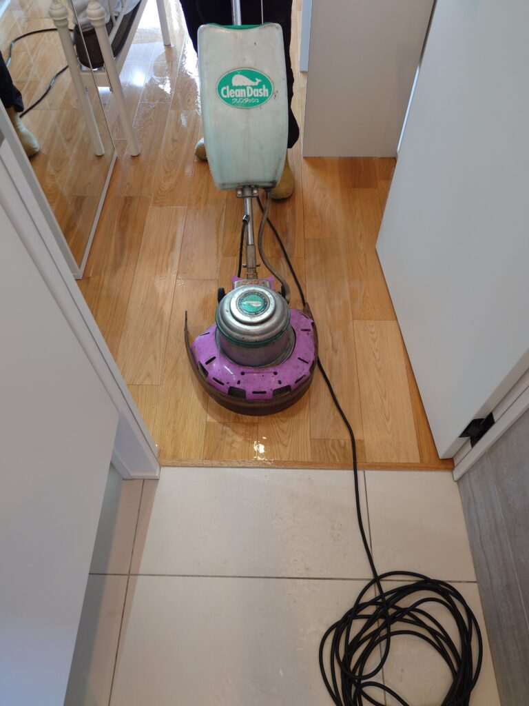
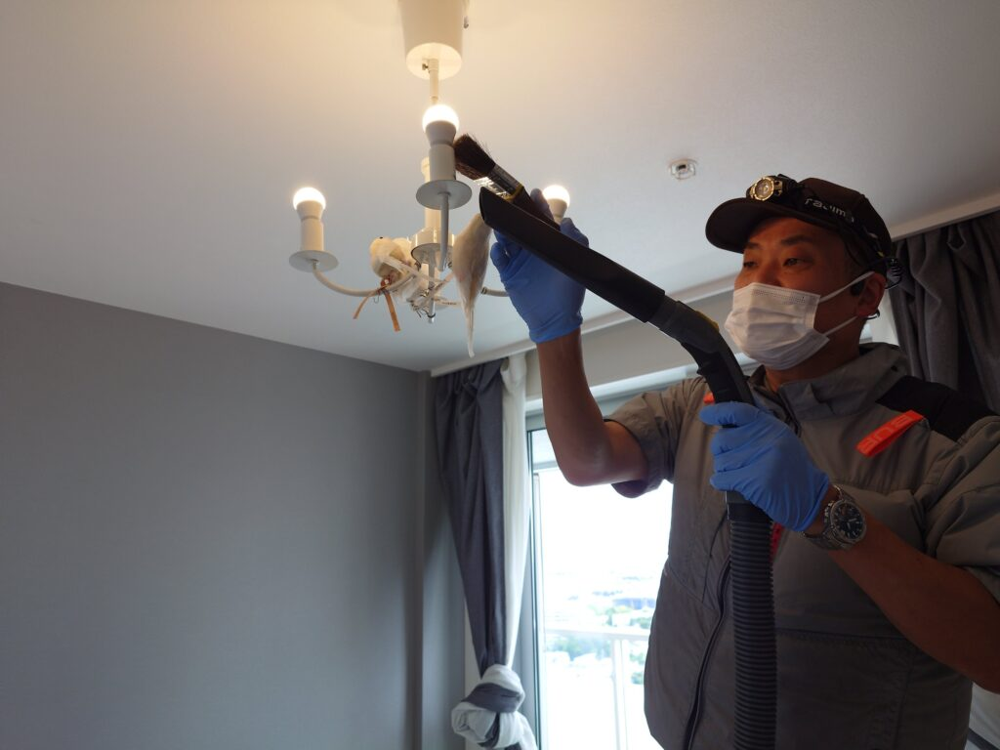
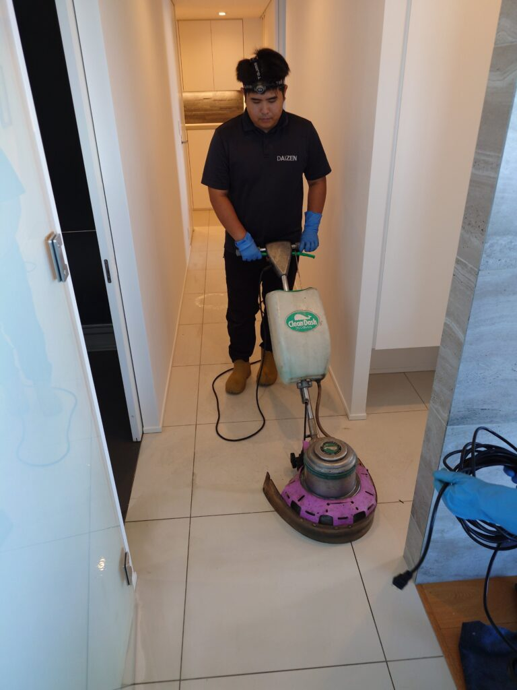
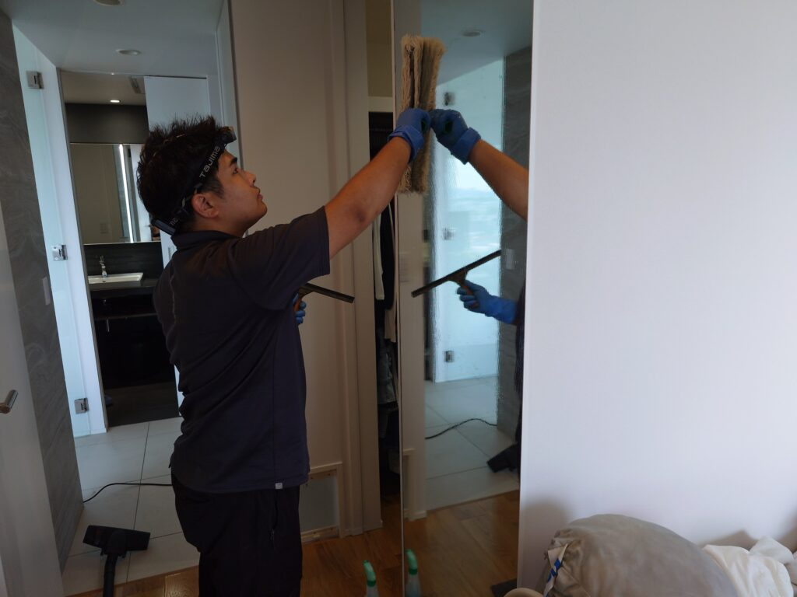

二子玉の綺麗なタワーマンションさん、二子玉川ライズのMさんご自宅の在室ハウスクリーニングをしました！

二子玉のとても素敵なタワーマンションさん、二子玉ライズのMさんご自宅の在室ハウスクリーニングを3日間掛けてみっちり実施しました！Mさんご自宅のお悩みは、床面が少しくすんで汚れ箇所が目立ち始めた事と、水回りのキッチン油汚れ、浴室の水垢汚れ、洗濯機の汚れ、壁掛けエアコンの汚れ、天井埋め込みエアコンの汚れ、素晴らしい眺めのリビングの窓汚れなど、多岐にわたりましたので、DAIZENプロフェッショナルメソッドを駆使して、3日間でそれら全てを徹底的に、綺麗にクリーニングしました！クリーニングが終了してとても綺麗に復元出来ましたので、Mさんとてもお喜びになって頂けました、よかったです！





